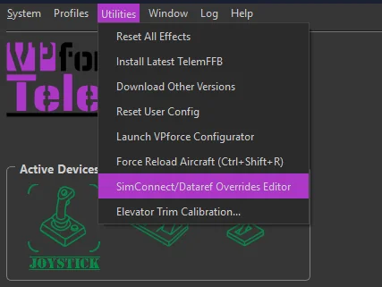
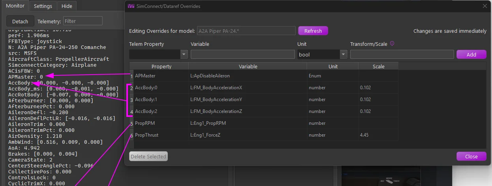

1. Telemetry Overrides¶
An advanced MSFS/X-Plane feature: change where a telemetry item’s data comes from, or subscribe to additional telemetry items, per aircraft. Open the editor from Utilities → SimConnect/Dataref Overrides Editor, with an aircraft loaded (or selected in the offline editor). Overrides are stored against the aircraft’s match pattern, and changes are saved and applied immediately.


1.1 Why it exists¶
TelemFFB’s effects consume a fixed set of telemetry items (the names you see in the Monitor tab). Normally each item is wired to a standard SimConnect variable or X-Plane dataref, but not every aircraft populates the standard sources:
- Source overrides. Sophisticated addon aircraft often implement their own systems in custom variables and leave the standard ones stale. The classic case is the autopilot indication: an addon whose AP never drives the standard
AUTOPILOT MASTERsimvar breaks every AP-aware TelemFFB feature until you overrideAPMasterto read the addon’s own variable. The same applies to custom engine and flight models (RPM, thrust, accelerations). - Additional subscriptions. An override whose Telem Property is a new name creates a new telemetry item. This is how the special aircraft implementations (the HPG helicopters, for example) receive their custom
L:Vars — their shipped default profiles include the required overrides by default.
1.2 How it works¶
- MSFS - the override replaces (or adds) the variable in TelemFFB’s SimConnect subscription set. The Variable field takes a SimVar name (
VARNAME) or an LVar (L:VARNAME); the Unit is the SimConnect unit to request (bool,enum,number,Percent Over 100,degrees,meters/second). - X-Plane - TelemFFB instructs its X-Plane plugin to subscribe to the given dataref (Unit:
intorfloat) and export it under the telemetry item’s name.
Either way, the result flows into the same telemetry item the effects already consume; verify it live in the Monitor tab. When an aircraft with active overrides loads, the status area shows a Telem Ovd pill with counts by tier (shipped default vs your own); hovering it lists every active override.
Additional profiles: clone, don’t create from scratch
Overrides belong to the matched model profile. If you need an additional profile (a livery whose name does not match the shipped pattern, for example), you must clone it from the default profile so the overrides carry over. An entry created from scratch will not pick them up, and every effect that depends on the overridden telemetry silently loses its data. (This is the general form of the rule the HPG helicopters document for their L:Var subscriptions; see the full roster of Aircraft with Special Treatment.) See Aircraft Profiles for cloning.
1.3 The editor fields¶
- Telem Property - the telemetry item to feed. The dropdown lists the standard overridable items, but the field is editable, which enables two more forms:
Name:indextargets one element of a list telemetry item; the screenshot overridesAccBody:0/1/2(the X/Y/Z body accelerations) individually.- A name not in the list creates a new telemetry item under that name.
- Variable - the SimVar/LVar (MSFS) or dataref path (X-Plane) to read.
- Unit - the unit/type to request, per sim as above.
- Transform/Scale - converts the raw value into the range the telemetry item expects. Leave blank for the raw value, enter a number for a simple multiplier, or (MSFS) a math expression using
xas the input, e.g.(x - 50) * 0.02maps 0-100 onto −1-1. Standard operators and parentheses only; for X-Plane the conversion is a numeric multiplier applied by the plugin.
The transform must make the value equivalent to the original
TelemFFB’s effects expect each telemetry item in the units, range, and sign of its original standard source: an override changes where the data comes from, not what the consumers expect. Whatever format the replacement variable uses natively, it is your job (via the Transform/Scale) to deliver an equivalent value. In the example below, the addon’s body accelerations arrive in m/s² where the standard item is in g, hence the 0.102 (≈1/9.81) scale. An override that “works” but skips this conversion feeds every dependent effect distorted data.
Rows shown greyed out come from the aircraft’s shipped default profile; they document what the curated profile already subscribes and cannot be deleted here. Your own rows (source “user”) can be selected and deleted.
1.4 Reading the example¶
The screenshot shows a curated set for the A2A Comanche, an addon with its own physics and systems model:
| Override | Why |
|---|---|
APMaster ← L:ApDisableAileron |
The addon’s AP state lives in its own LVar; the standard AP simvar would read stale. Restores AP-aware behavior. |
AccBody:0/1/2 ← L:FM_BodyAcceleration X/Y/Z, scale 0.102 |
The addon computes its own body accelerations; 0.102 ≈ 1/9.81 converts m/s² to g, the range the effects expect. |
PropRPM ← L:Eng1_PropRPM |
The custom engine model’s RPM, not the standard prop simvar. |
PropThrust ← L:Eng1_ForceZ, scale 4.45 |
Thrust from the custom model, scaled into the expected units. |
1.5 Cautions¶
- An override changes the input for every effect that consumes that telemetry item; a wrong variable or scale can quietly distort several effects at once. Sanity-check the value in the Monitor tab against what you expect (units and sign included).
- Core flight-dynamics items (attitude, airspeed, AoA and similar) are deliberately absent from the dropdown; overriding the fundamentals is rarely the right fix.